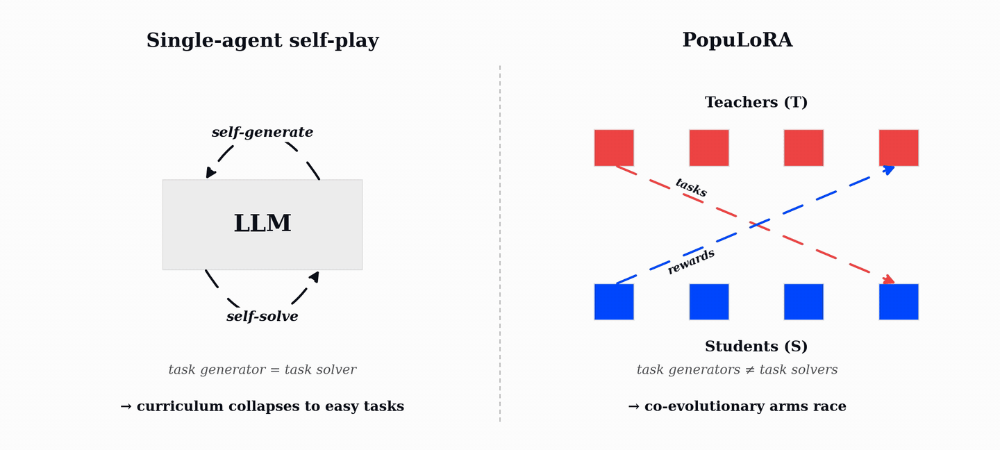
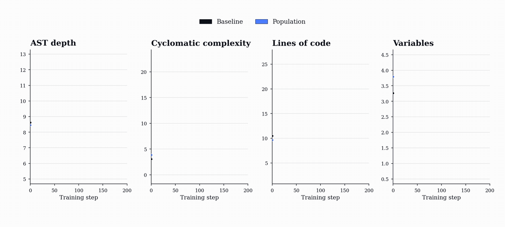
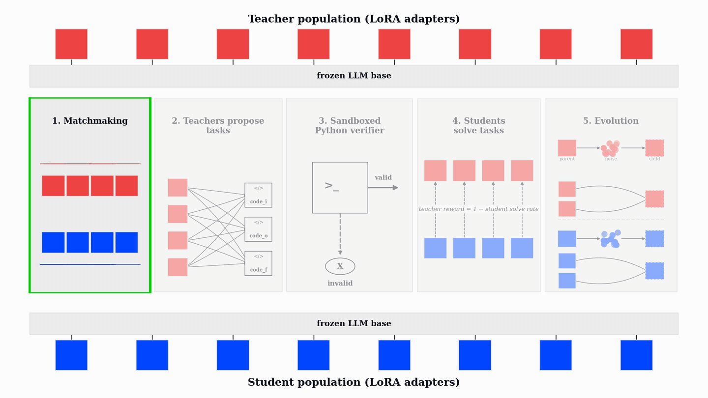
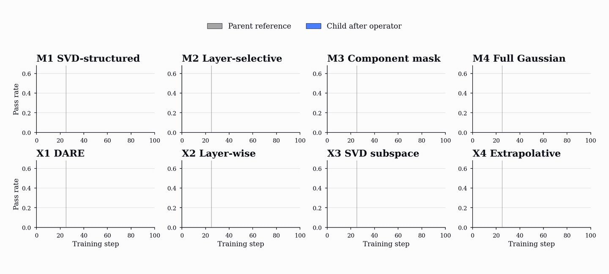
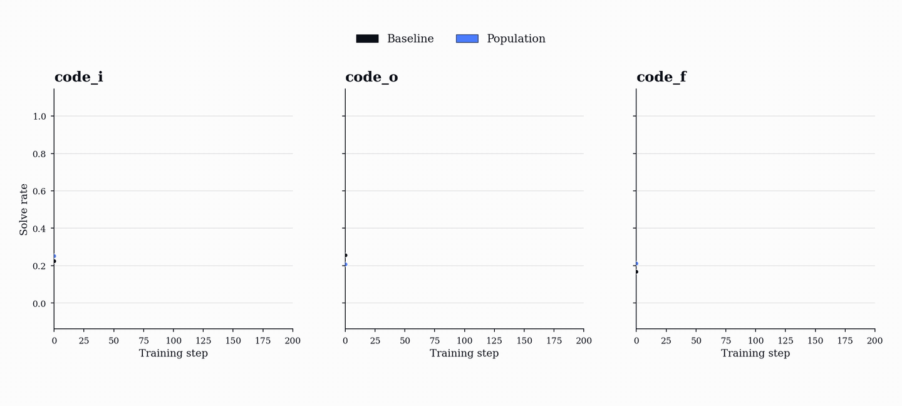
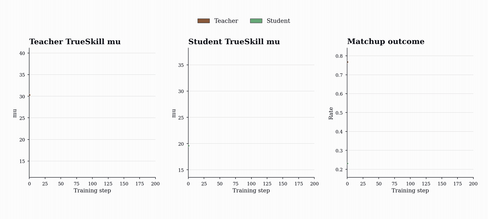
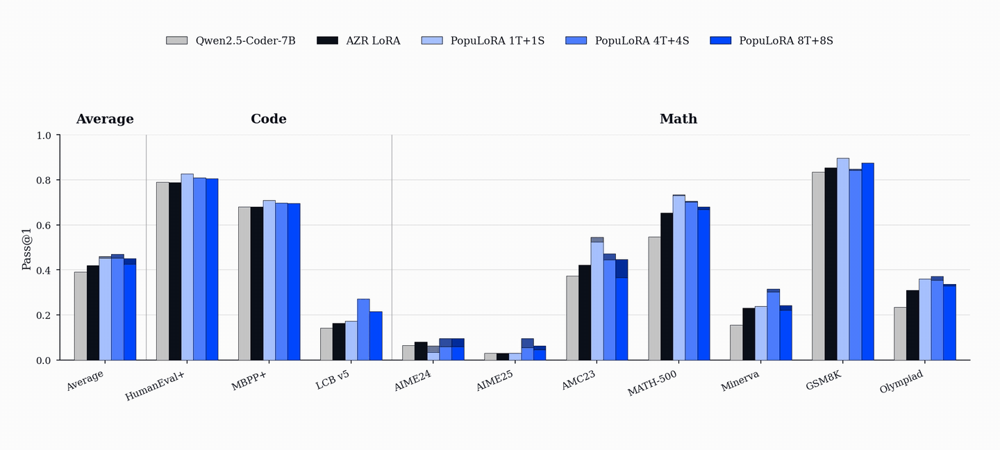

PopuLoRA: Co-Evolving LLM Populations for Reasoning Self-Play
Originally published on the Vmax blog. Paper: arXiv:2605.16727.
Reinforcement learning with verifiable rewards (RLVR) gives large language models (LLMs; hereafter, models) a way to develop sophisticated reasoning behaviors that pre-training alone does not reliably produce: models repeatedly attempt tasks whose solutions can be checked automatically, and they are reinforced when those attempts succeed. When the correctness of model-generated solutions is verifiable, the reward is unusually clean: the model writes code that passes a unit test, finds an input that matches a target output, solves a math task with a checkable answer, or succeeds under any deterministic verifier.
RLVR needs a steady supply of verifiable tasks at scale: tasks whose solutions can be checked, whose difficulty stays near the model's frontier, and whose coverage is broad enough to keep training useful. Today, most systems still rely on fixed, hand-curated task distributions chosen before training begins. Those distributions can become too easy, too narrow, or too slow to adapt.
Synthetic RLVR tasks can be produced with hand-written generators, and this is already a common way to scale verifiable training data. But a fixed generator still defines much of the curriculum in advance. Self-play offers a more adaptive route: models can generate tasks, attempt them, and receive verifier feedback as training unfolds. We build on this line of work, asking whether task generation can become an online curriculum that adapts as the models learn.
PopuLoRA is our first step in that direction. It trains co-evolving populations of teacher and student LLM adapters. Teachers generate verifiable tasks, students try to solve them, and the verifier supplies the reward. As students improve, teachers have to search for harder and broader tasks; as teachers diversify, students see a curriculum that keeps moving with them.
Self-Play and Its Failure Mode
A viable way to adaptively generate data is single-agent self-play: one model proposes tasks for itself and then tries to solve them. In the code-reasoning setting we study, the model generates three kinds of tasks: code_o, where it predicts the output of a program; code_i, where it finds an input that produces a target output; and code_f, where it completes a missing function from input-output examples. A sandboxed Python executor accepts only programs that parse, execute, and behave deterministically.

In practice, we find that single-agent self-play self-calibrates: task generation converges toward valid tasks that its own solver can already handle, solve rate climbs toward 100%, and the curriculum collapses onto increasingly simple programs. The reward curve looks healthy, but the training distribution has stopped pushing the model.
The collapse is visible in the generated programs. In the single-agent baseline, AST depth, cyclomatic complexity, lines of code, and variable count all trend downward. PopuLoRA moves in the opposite direction: the generated tasks become longer, deeper, and more structurally varied over training.

PopuLoRA
PopuLoRA separates task generation from task solving. Instead of one self-playing model, we train co-evolving populations of specialized task generators, called teachers (T), and solvers, called students (S). At each step, a teacher is matched with a student: the teacher proposes tasks, and the paired student attempts them under the verifier. A teacher is rewarded for valid tasks that the matched student fails to solve, so difficulty is measured against a different model rather than against the teacher's own ability.

This turns difficulty into an inter-population signal. Teachers and students are different models, and both sub-populations continue changing throughout training. The result is an autocurriculum driven by cross-evaluation rather than by a single model's local notion of task difficulty.
The populations are implemented as LoRA adapters on a shared frozen base model. Each member trains only a small low-rank update rather than a full model copy, while the dominant base-model computation is shared across teachers and students. This makes population training feasible on a single machine: memory scales with the sum of adapter weights, multi-LoRA inference routes batched requests to the correct adapter without swapping the base model in and out of memory, and the 4T+4S setting trains eight adapters with only a 1.31x wall-clock overhead.
The Training Loop
Each PopuLoRA step has five phases. First, teachers and students are matched using prioritized fictitious self-play over TrueSkill ratings, which concentrates training on near-balanced matchups where neither side dominates. Each teacher then generates a batch of code_i, code_o, and code_f tasks. The Python verifier filters out invalid or nondeterministic programs before students ever see them. The matched student attempts the valid tasks with multiple stochastic rollouts, and the verifier records the fraction of attempts that solve each task.
Teachers and students are then updated jointly with policy-gradient RL. Students receive the verifier reward for producing correct, well-formed solutions. Teachers receive reward only for valid tasks that are hard for the matched student, with a zero-reward floor for tasks no rollout solves. This floor matters: it prevents teachers from being rewarded for impossible or degenerate tasks. The teacher objective therefore favors the contested middle: valid tasks that are difficult but learnable.
At the core, teacher reward is tied to the matched student's solve rate:
Here, ρ(t, s, p) denotes the fraction of rollout attempts by the matched student s that solve task p from teacher t. Lowercase t and s denote the specific matched teacher and student; uppercase T and S refer to the teacher and student roles or counts.
Every few update steps, the weakest members of the teacher sub-population and the student sub-population are replaced through LoRA weight-space evolution.
Evolution in Weight Space
PopuLoRA uses evolution as the replacement step of population-based training. The replacement operators act directly on LoRA tensors. Mutations perturb one parent adapter; crossovers combine two parent adapters into a child. Some operators perturb singular values or rotate low-rank subspaces, while others swap layer-module slots between parents. Because these operators act on low-rank LoRA tensors, new population members can be produced in seconds and re-enter gradient training immediately.

The key requirement for an operator is capability retention. A replacement child should not reset to the frozen base; it should preserve enough parent behavior to re-enter training near the current frontier. In our retention tests, the operators used in the live population recover to parent-level reward within roughly 10-20 update steps after reinjection.
Crossovers are especially important because they can combine complementary specializations. Parents trained along different trajectories can produce a child that retains useful behavior from both, giving the population a way to recombine discoveries rather than only perturb them.
The Arms Race
The training dynamics show why this separation matters. In the single-agent baseline, solve rates quickly saturate to near-perfect performance. This is not evidence of a strong curriculum. It means the proposer has found tasks its own solver can reliably solve.
In PopuLoRA, solve rates oscillate instead of monotonically increasing. As teachers generate harder tasks, students fail more often; as students improve, teachers are pushed to increase difficulty again. The curriculum evolves with the models rather than settling around a fixed point.

TrueSkill makes the same arms race visible at the population level. Individual adapters start near the same prior rating, then differentiate as training proceeds: stronger and weaker teachers emerge, stronger and weaker students emerge, and different members specialize along different trajectories. In the TrueSkill plots, lines show population means and shaded bands show standard deviations across population members.

The generated programs show the same pattern directly. The single-agent baseline learns to produce shorter, flatter, simpler programs, exactly the kind its own solver can handle. PopuLoRA does the opposite. Because teacher reward depends on matched-student failure, the only way to keep receiving reward is to keep finding valid tasks that push the current students. The curriculum is not only getting harder; it is expanding into a larger and more diverse region of program space.
Downstream Results
After training, PopuLoRA outperforms the per-adapter compute-matched single-agent baseline on standard code benchmarks including HumanEval+, MBPP+, and LiveCodeBench.

PopuLoRA also shows gains on math benchmarks, even though training uses only code tasks generated during training and a Python executor rather than a math verifier. We treat these results as suggestive transfer, not proof that populations alone cause out-of-domain generalization. Gains on AIME, AMC, MATH-500, GSM8K, and OlympiadBench are consistent with a harder and more diverse code curriculum helping broader reasoning, but they do not isolate which part of the method is responsible.
The gains are also population-wide. Even the weakest members of the 4T+4S population outperform the baseline on aggregate metrics, so the effect is not a single lucky specialist. Co-evolution lifts the whole population.
Conclusion
PopuLoRA is an early step toward systems that can generate part of their own training frontier. If the same model both proposes tasks and estimates their difficulty, self-play can self-calibrate toward tasks the model already knows how to solve. Separating task generator and solver changes the pressure: teachers search for the edge of current student ability, students improve, and the teacher population has to search again.
The practical pieces matter. Asymmetric roles supply the pressure, populations supply diversity, LoRA makes the population affordable, and online weight-space evolution keeps weak lineages from sitting still. Together, they turn self-play from a loop that can collapse into comfort-zone learning into a self-generated curriculum that keeps expanding throughout training.
Looking forward, PopuLoRA suggests a practical path for self-play and self-improving systems: keep generation, evaluation, and replacement distributed across a changing population, so the system has to adapt to opponents that are changing with it.